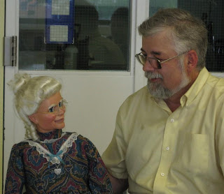
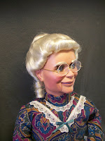

From Wilson Kindred
7/17/2011
{kind=link}

Granny's a hit! They love her! Yes, Granny has made two public appearances to date.Thank you Mr. D. You have done such an amazing job at creating the Granny figure we asked you for! She's
{kind=link}

perfect! We love everything about her! I fell in love with her as soon as I opened her case and saw her. Her eyes and her silver hair are fantastic. She is so beautifully crafted.We love the "crow's feet" at the corners of her eyes and the wrinkles at the corners of her mouth. You did such a fantastic job of creating her spectacles! They look so real!
In the early going, Granny's personality is marked by her aged innocence, expressive (sometimes boisterous) antics, as well as her "foolish pearls of wisdom". Granny has been taking her audience on a stroll down memory lane to the good old days when people cared about people, morals were high, and things in general were, "of course", much better.
The prim and proper, adorable old lady has already surprised her audience with a rough and candid openness. On her first outing, she whispered to the Pastor of the hosting church. When he politely asked her to repeat what she had said, she bellowed, "I said, will you help me? My bloomers are twisted! My knickers are in a not knot!" His face was red and his wife was bent over in hysterical laughter.
We want to thank you, Mr. D, for your creation of such a wonderful character and new addition to our ministry!
* * * * *
http://www.alivingwayminitries.org/livingway/index.cfm